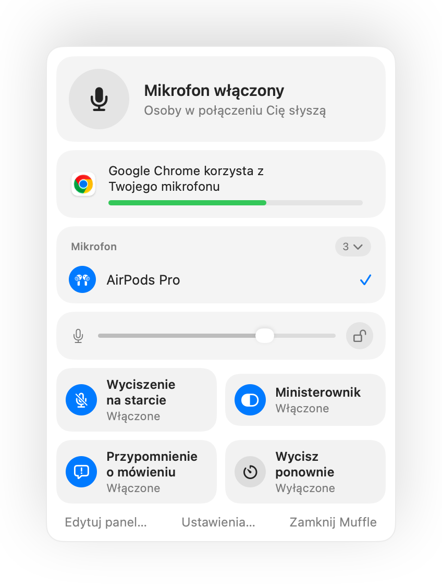

Jak wyciszyć Zoom za pomocą AirPods lub skrótu na Macu
Własny skrót programu Zoom, Command-Shift-A, działa tylko wtedy, gdy Zoom jest aktywną aplikacją na wierzchu. Kiedy robisz notatki lub udostępniasz inne okno, szukanie przycisku wyciszenia zabiera cenne sekundy.
Muffle daje Ci jedno sterowanie wyciszeniem dla Zoom i każdej innej aplikacji: przez słuchawki AirPods, globalny skrót klawiszowy lub pasek menu. Wycisza sam mikrofon, więc działa w aplikacji Zoom oraz podczas rozmowy w przeglądarce.
Wypróbuj Muffle bezpłatnie przez 3 dniWkrótce w Mac App Store
Wycisz Zoom z dowolnego miejsca
- Zainstaluj Muffle i zezwól na dostęp do mikrofonu.
- Dołącz do spotkania w Zoom jak zwykle.
- Naciśnij trzonek AirPods lub skrót Control-Option-M, aby wyciszyć mikrofon z dowolnej aplikacji.
- Przytrzymaj Control-Option-M, gdy mikrofon jest wyciszony, aby mówić, i puść, aby ponownie wyciszyć.

- Jeśli Zoom na Twoim Macu sam przechwytuje naciśnięcie AirPods, skrót klawiszowy i pasek menu nadal wyciszają Cię przez Muffle.
- Zoom może pokazywać mikrofon jako włączony, podczas gdy Muffle go wyłącza. Uczestnicy spotkania słyszą ciszę.
Pytania
Czy Muffle zastępuje przycisk wyciszenia w Zoom?
Działa równolegle z nim. Muffle wyłącza mikrofon dla każdej aplikacji, więc możesz wyciszyć Zoom bez przełączania się na jego okno.
Czy mogę używać funkcji naciśnij i mów (push to talk) w Zoom?
Tak. Gdy mikrofon jest wyciszony, przytrzymaj skrót Muffle, aby mówić. Działa to w Zoom i w każdej innej aplikacji.